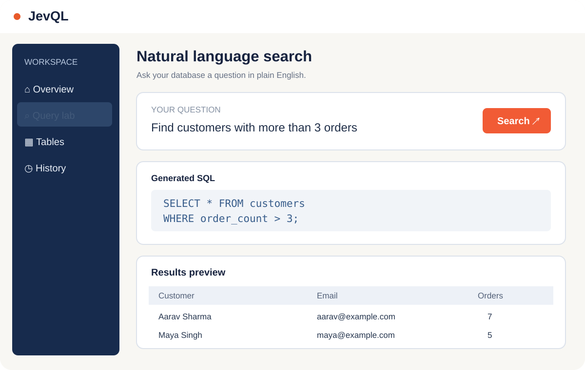
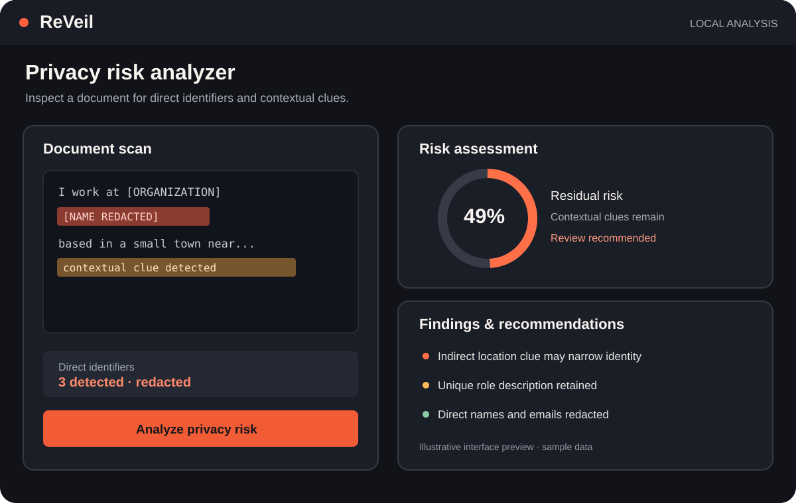
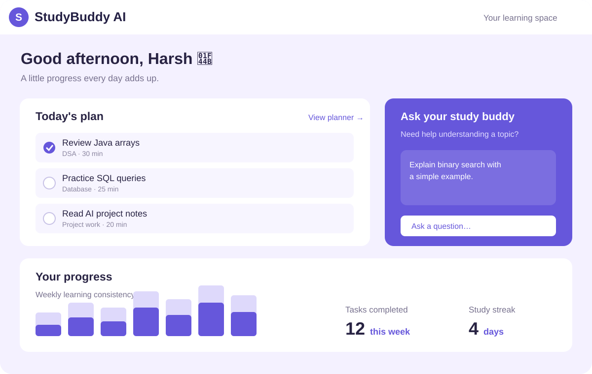

01 / DEVELOPER TOOLS

JevQLJevQL
A natural-language interface for PostgreSQL that helps users explore data with plain-English questions and inspect the SQL generated behind each query.
Explore on GitHub ↗HEY, I’M HARSH — I BUILD THINGS FOR THE WEB.
Computer Science student, project builder, and lifelong learner exploring the space where software, AI, and people meet.
01 / A LITTLE ABOUT ME
THE SHORT VERSIONI’m a B.Tech Computer Science student at Rayat Bahra University who enjoys learning by building real things.
From web apps to AI-assisted tools, I’m interested in how thoughtful engineering can solve practical problems. I value curiosity, clear communication, and teams where people help each other get better.
For me, tech communities are where learning gets amplified: new perspectives, honest feedback, and the motivation to keep shipping.
02 / TOOLS IN MY TOOLBOX
ALWAYS EXPANDINGNOTE: I’M LEARNING CONSTANTLY — THIS LIST IS A SNAPSHOT, NOT A FINISH LINE.
03 / SELECTED PROJECTS
IDEAS MADE TANGIBLEA few projects that reflect what I’m exploring right now: AI, developer tools, and learning experiences.

JevQLA natural-language interface for PostgreSQL that helps users explore data with plain-English questions and inspect the SQL generated behind each query.
Explore on GitHub ↗
ReVeilA privacy-risk analyzer concept that redacts direct identifiers and examines contextual clues with a local AI model to help reveal residual re-identification risks.
Explore on GitHub ↗
StudyBuddy AIA student-focused app concept combining an AI study assistant, planner, and progress tracking to make daily learning easier to organize.
Explore on GitHub ↗PROJECT LINKS CURRENTLY POINT TO MY GITHUB PROFILE — INDIVIDUAL REPOSITORY LINKS CAN BE ADDED WHEN READY.
04 / BEYOND THE SCREEN
PEOPLE MAKE TECH BETTERI’m excited by communities that make technology more open, welcoming, and collaborative. I enjoy meeting builders, learning from speakers, sharing ideas, and helping events run smoothly.
Connect on LinkedIn ↗WHY DEVFEST?
I’d love to contribute energy, reliability, and a learner’s mindset to the GDG Gurugram community — while helping attendees feel welcome and connected.
COMMUNITY FIRST / ALWAYSAttended sessions exploring Green AI, Kubernetes, eBPF, observability, and sustainable infrastructure. A reminder that the best learning often happens when people share what they’re building.
05 / HAVE SOMETHING IN MIND?
Open to meeting fellow developers, collaborating on projects, and contributing to tech communities.
Say hello ↗